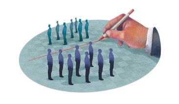

여러분, 분단 소설에 대해 아시나요? 우리나라에서 분단 소설이란 남북 분단에 관한 역사적 사실 등을 바탕으로 씌어진 소설로, 대게 남북 분단의 원인 탐구 또는 이산가족의 상처와 아픔, 분단을 극복하기 위한 의지 등의 내용을 이야기로 녹여냅니다. 하지만 전쟁을 겪어보지 않은 80년대 이후에는 작가가 어느 시기에 전쟁을 직접적으로/ 간접적으로 경험했느냐에 따라 남북 분단 문제를 다루는데 차이를 보여 소설마다 다른 주제를 녹여낸 것을 찾아볼 수 있습니다.
김영하 작가의 <빛의 제국> 소설에서는 자본주의적 일상이 견고한 이념의 문제들을 어떻게 흡수하는지에 대한 이야기가 나오며, 이응준 작가의 <국가의 사생활>을 살펴볼 때, 통일 이후의 혼란을 현실적으로 이야기하는 주제가 이어집니다. 따라서 제가 생각하는 현대의 한국 분단소설은 통일의 당위성을 다루기보다는 분단을 소재로 잡아 공상적인 소설이야기라고 정의를 내려보았습니다.
여러분은 저의 의견에 동의하시나요? 우리나라와 같이 과거 동쪽과 서쪽으로 분단되었던 국가있는데요, 바로 독일입니다. 그렇다면 독일의 분단소설은 어떤 주제를 담고 있을까요?
독일의 분단 소설이란 1945년 연합군 군정으로 4개국에 분할 통치된 시점부터 동서독 대립을 거쳐 1990년 독일 재통일 이후 시대까지 배경으로 이루는 소설로, 우리나라와 달리 통일의 이야기를 담을 수 있다는 것에서 차이점을 찾아낼 수 있습니다.
독일 분단 소설 대표작인 토마스 브루시히 <그것이 어떻게 빛나는지>을 살펴볼 때, 베를린 장벽이 무너지던 1989년과 독일의 통일이 완전히 이루어진 1990년까지를 시대적 배경으로 하고 있으며 이 격동의 시간을 온몸으로 거쳐간 여러 주인공의 이야기를 따로 진행되는 옴니버스 소설입니다. 제가 직접 읽어보니, 때로는 한곳으로 모여드는 퍼즐 같은 형식을 취하고 있어 재미를 느낄 수 있었습니다. <그것이 어떻게 빛나는지>를 읽지 않았음에도, 읽은 것처럼 여러분에게 짧게 줄거리를 소개해드리겠습니다.

줄거리를 알게 된 여러분, 독일의 분단 소설이 어떻게 느껴지시나요? 저는 이 책을 읽기 전에는 독일의 분단 소설을 생각했을 때, 통일을 이룬 국가이기에 통일에 대해 긍정적인 내용을 담았을 것이라 예상했습니다. 하지만, 통일에 대해 무조건적으로 긍정적으로 서술하지 않았죠? 동독과 서독이라는 전혀 다른 두 체제를 겪은 후, 통일을 맞이한 독일의 작가들은 통일 이후의 현실을 매우 비판적으로 서술합니다. 특히 ‘머릿속의 장벽’인 동독과 서독 사이의 이질감은 여전히 해소되지 않고 있다고 합니다.
이미 분단과 통일, 통일 이후의 갈등을 경험한 바가 있는 독일 작가들의 소설들과 비교하는 것은 우리에게 의미 있는 반성의 계기가 될 수 있을 것이라 생각합니다. 또한 이번 독서를 통해 통일에 대한 섣부른 긍정론이 대두되는 상황에서 문학 작품을 통해 우회적으로 분단과 통일의 문제를 고찰하면서 분단의 극복은 정치적 수사나 일시적인 정책으로는 쉽게 봉합할 수 없는 문제임을 알 수 있었습니다. 여러분은 한국과 독일의 분단 소설, 서로 다른 상황 그리고 서로 다른 이야기에 대해 어떻게 느끼셨나요? 저의 글을 재밌게 읽으셨다면, 또 다른 독일의 분단소설 페터 슈나이더의 <장벽을 뛰어넘는 사람>을 추천드립니다!